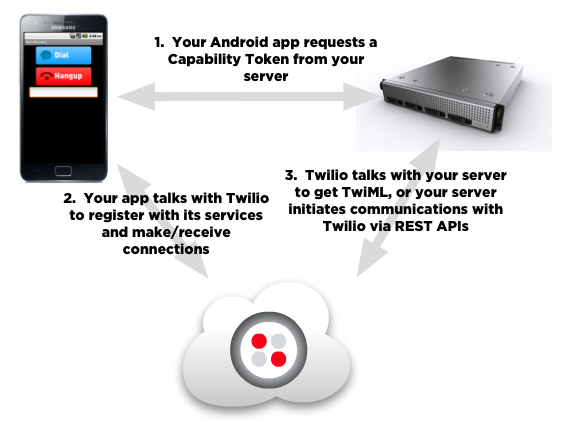

Twilio Client SDK for Android Quickstart
Overview
You want your Android phone or tablet app to make and receive calls? Want to add voice-chat support to your Android game for players to mock each other? Look no further. We've got the SDK for you.
Twilio Client Android is a Java SDK for Google's Android platform that enables voice communications with land-lines or other Twilio Clients, including Web Browsers or other mobile devices running compatible apps.
In this Quickstart, we'll demonstrate using the Twilio Client APIs to make an outgoing call, receive an incoming call, and make calls between two Twilio Client instances.
This guide assumes you have familiarity with Android and Java, and concepts like Activities (and their lifecycles), Listeners, and how to build a basic Android application.
Architecture
There are three major pieces in a Twilio Client app:
- Your Android app that uses the
twilio-client-sdk.jarlibrary - A server to grant capabilities to your Client app as well as to serve up TwiML and/or make Twilio REST API calls
- Twilio's cloud services to handle the telephony and process TwiML and/or REST API calls

Server-side Security: Capability Tokens
The Twilio Client SDK uses a capability token to sign communications from your Android app to Twilio. These tokens are created by you on your server and allow you to specify what capabilities are going to be available to your app, such as whether it can receive incoming connections, make outgoing connections, etc. These tokens always have an expiration, which means all tokens have a limited lifetime to protect you from abuse. It is up to you to determine how often these tokens must be refreshed.
Twilio capability tokens are based on the JSON Web Token standard and are generated by our helper libraries that come in a variety of languages. These libs can be found in the Helper Libs folder of the SDK or from the Twilio Helper Libraries page. Usage is documented more thoroughly in the Capability Tokens portion of the site.
For the security of your Twilio account, you should not embed a Capability Token or your Twilio Auth Token as strings in the app you distribute on the Google Play Store or other Android marketplace.
Client-side Classes
All classes that you will interact with live in the com.twilio.client
package.
First you'll visit the Twilio class, which allows you to initalize the
Twilio Client SDK. After that, the primary class for connecting to Twilio
services from your app is Device. This class coordinates service
authorization with Twilio, listens for incoming connections, and establishes
outgoing connections. An instance of this class is created using a
"capabilty token", described in the next section.
Connections to Twilio, either incoming or outgoing, are represented by
instances of a class implementing Connection interface.
In addition, status callbacks are provided to objects that implement the
listener interfaces DeviceListener and ConnectionListener.
In this tutorial, we'll demonstrate using the Twilio Client APIs to make an outgoing call, receive an incoming call, and make calls between two Twilio Client devices.
This guide assumes you have familiarity with Android and Java, and concepts like Activities (and their lifecycles), Listeners, and how to build a basic Android application.
Prerequisites
-
Install Eclipse and the Android Developer Tools plugin. We recommend that you use the latest version available, but anything at least as new as version 18 should work.
-
Install the Android SDK (recommended minimum of r18) and appropriate platform tools and platform API package. Note that the Client SDK depends on a minimum of API level 8 (Android 2.2), though you can of course build against newer API levels to use newer Android features.
-
Get a Twilio Account SID and Auth Token to initiate calls from your Android device. You will find these in your Account Dashboard. If you don't have an account, you can always sign up for a free trial account.
-
A Twilio Application SID. A Twilio Application is a convenient way to store a set of URLs, like the VoiceUrl and SmsUrl on a phone number, but without locking them to a specific phone number. Visit the Apps tab to create an Application.
-
(optional) An Android device. We recommend that you develop on a real Android device, as audio performance can be a bit choppy when using the Emulator, depending on the specs of your development machine. You'll also need two devices (or a device and the Emulator) to complete the final section of this Quickstart Tutorial.
Download Code
You can find all of the code from these tutorials in the quickstart/
folder of the
Twilio Client Android SDK download.
Generating Capability Tokens
To begin, you'll need to set up a server for sending out capability
tokens. We've included a PHP sample file called auth.php that's in
the server/ folder next to the Eclipse project that can create tokens.
Note that this also makes use of Capability.php from the
Twilio PHP helper library.
auth.php
<?php include "Services/Twilio/Capability.php"; // AccountSid and AuthToken can be found in your account dashboard $accountSid = "ACXXXXXXXXXXXXXXXX"; $authToken = "your_auth_token_here"; // The app outgoing connections will use: $appSid = "APabe7650f654fc34655fc81ae71caa3ff"; // The client name for incoming connections: $clientName = "monkey"; $capability = new Services_Twilio_Capability($accountSid, $authToken); // This allows incoming connections as $clientName: $capability->allowClientIncoming($clientName); // This allows outgoing connections to $appSid with the "From" // parameter being the value of $clientName $capability->allowClientOutgoing($appSid, array(), $clientName); // This returns a token to use with Twilio based on // the account and capabilities defined above $token = $capability->generateToken(); echo $token; ?>
Making a request to this file on a PHP server will output a string that,
when given to a Device, grants it capabilities such as making outgoing
calls or allowing incoming calls.
Note that the token generated is valid for 1 hour unless otherwise
specified. To specify a different period of time, pass in the number
of seconds as an integer parameter to generateToken() – for example,
for a token that expires after 5 minutes, call generateToken(300).
The maximum allowed lifetime for a token is 24 hours.
To fetch the token, put the auth.php file and Twilio Helper Library
PHP files on your server, and then modify the $accountSid and
$authToken to be values from your Twilio account. To make sure it
works, open a web browser and hit the URL (e.g.
http://companyfoo.com/auth.php). Assuming there aren't any issues,
you should see a long string of text – this is a capability token for
the user named "monkey" to receive incoming and make outgoing calls.
Now let's walk through making an outgoing call to a phone number. This code can be run either in the Android Emulator or on your device.
Make Outgoing Calls
The Eclipse project
Next, open the "HelloMonkey" project in Eclipse (File -> Import -> General -> Existing Projects into Workspace).
The HelloMonkey app is very simple, presenting "Dial" and "Hangup" buttons, and
a text field for who the app should call. The user interface elements have
already been wired up to the HelloMonkeyActivity class but don't actually do
anything (yet).
First let's run through the code and figure out what everything does.
Classes
The MonkeyPhone class is going to be our central coordinator object that
talks to the Twilio Client APIs, and this is where the bulk of the
functionality will live.
The MonkeyPhoneActivity class is the Android application's main Activity
that will instantiate MonkeyPhone and respond to user input events.
The HttpHelper class is a simple wrapper around Apache HttpClient (included
with the Android SDK) that'll make it easier to fetch HTTP URLs. In your real
application, you'll want to do something similar, but handle downloading
asynchronously, in another thread, to avoid blocking the main UI thread.
Initializing the SDK and Creating a Device
Before doing anything, you must first initialize the Twilio Client SDK. This
happens asynchronously, and you'll get notified via a Listener when the SDK
is up and running. The call to Twilio.initialize() in the constructor of
MonkeyPhone takes care of this. You'll get notified of success or failure
via the Twilio.InitListener interface, which the MonkeyPhone class also
implements.
In the onInitialized() method, we create an instance of the
com.twilio.client.Device class using the factory method
Twilio.createDevice(). An instance of Device represents a soft "device"
that knows how to speak to Twilio services. You'll use a Device to
initiate outgoing calls and listen for incoming calls. Here's what the base
MonkeyPhone class looks like:
MonkeyPhone.java
import com.twilio.client.Device;
import com.twilio.client.Twilio;
public class MonkeyPhone implements Twilio.InitListener
{
public MonkeyPhone(Context context)
{
Twilio.initialize(context, this /* Twilio.InitListener */);
}
@Override /* Twilio.InitListener method */
public void onInitialized()
{
Log.d(TAG, "Twilio SDK is ready");
try {
String capabilityToken = HttpHelper.httpGet("http://companyfoo.com/auth.php");
device = Twilio.createDevice(capabilityToken, null /* DeviceListener */);
} catch (Exception e) {
Log.e(TAG, "Failed to obtain capability token: " + e.getLocalizedMessage());
}
}
@Override /* Twilio.InitListener method */
public void onError(Exception e)
{
Log.e(TAG, "Twilio SDK couldn't start: " + e.getLocalizedMessage());
}
@Override
protected void finalize()
{
if (device != null)
device.release();
}
}
Note that the URL we're fetching is on a server called "companyfoo.com".
You'll want to change that URL to point to where you stored auth.php on
your server.
For the security of your Twilio Account, you should never store a capability token string or your Twilio AuthToken as a part of the app you distribute on the Android Market.
The HelloMonkeyActivity class is pretty simple at this point: all it does
is set up the UI view, fetch some widget references, and instantiate an
instance of MonkeyPhone:
HelloMonkeyActivity.java
public class HelloMonkeyActivity extends Activity implements View.OnClickListener
{
private MonkeyPhone phone;
private EditText numberField;
@Override
public void onCreate(Bundle bundle)
{
super.onCreate(bundle);
setContentView(R.layout.main);
phone = new MonkeyPhone(getApplicationContext());
ImageButton dialButton = (ImageButton)findViewById(R.id.dialButton);
dialButton.setOnClickListener(this);
ImageButton hangupButton = (ImageButton)findViewById(R.id.hangupButton);
hangupButton.setOnClickListener(this);
numberField = (EditText)findViewById(R.id.numberField);
}
@Override
public void onClick(View view)
{
if (view.getId() == R.id.dialButton)
phone.connect();
}
}
Important note: we recommend that you pass Application context (and not
Activity context) to Twilio SDK functions. The SDK internals that need
a reference to a Context instance will likely live beyond the lifecycle of
any individual Activity. See the article
Avoiding Memory Leaks
for more information on why this matters.
There's one more thing that we need to do before it will run. Due to how
Android handles background apps, the SDK uses an Android Service behind
the scenes. This service needs to be declared in your
AndroidManifest.xml file inside the <application> tag like so:
AndroidManifest.xml
<!-- ... other XML stuff... -->
<application
android:icon="@drawable/ic_launcher"
android:label="@string/app_name">
<activity
android:label="@string/app_name"
android:name="com.twilio.example.hellomonkey.HelloMonkeyActivity"
android:screenOrientation="portrait">
<intent-filter >
<action android:name="android.intent.action.MAIN" />
<category android:name="android.intent.category.LAUNCHER" />
</intent-filter>
</activity>
<service
android:name="com.twilio.client.TwilioClientService"
android:exported="false" />
</application>
<!-- ... other XML stuff... -->
Take special note of the android:exported="false" attribute. This is
necessary to avoid interfering with other applications built using the
Twilio Client SDK. The SDK will refuse to initialize if it detects
that this attribute is missing.
While you have the manifest open, take a look at the <uses-permission>
tags. These are all required when using the Twilio Client SDK, so don't
forget to add them to your own applications.
If you compile and run this code, you should see the following:
Now we've got an app that can create outgoing connections and receive incoming connections.
For the time being we'll focus on making an outgoing connection. The connection will call a Twilio sample application that responds with a friendly greeting.
Dialing Out
In this section of the Quickstart, we'll be:
- Making
MonkeyPhoneable to call out, and - Hooking up one of the buttons in the UI.
Let's add a method to MonkeyPhone to initiate a connection. We'll keep track
of the connection we've created as a member variable of type Connection. To
make a connection, we call the Device.connect() method. Just pass in null
parameters and a null listener for the moment; we'll do more with these
arguments later.
MonkeyPhone.java
import com.twilio.client.Connection;
import com.twilio.client.Device;
import com.twilio.client.Twilio;
public class MonkeyPhone implements Twilio.InitListener
{
private Device device;
private Connection connection;
/* ... other methods ... */
public void connect()
{
connection = device.connect(null /* parameters */, null /* ConnectionListener */);
if (connection == null)
Log.w(TAG, "Failed to create new connection");
}
@Override
protected void finalize()
{
if (connection != null)
connection.disconnect();
if (device != null)
device.release();
}
}
Note that we do a null check on the returned Connection object after
calling connect(). There are some cases where creating a new connection
can fail.
If you take a look at HelloMonkeyActivity, you'll notice it has a member
variable called phone of type MonkeyPhone. When the activity is launched,
it initializes a MonkeyPhone object and sets it as the value of the phone
member.
There's also an empty onClick() handler for the dial and hangup buttons.
When the dial button is pressed, we (obviously) want to dial out. Let's use
the MonkeyPhone instance to do that:
HelloMonkeyActivity.java:
public class HelloMonkeyActivity extends Activity implements View.OnClickListener
{
private MonkeyPhone phone;
/* ... other methods ... */
@Override
public void onClick(View view)
{
if (view.getId() == R.id.dialButton)
phone.connect();
}
}
If you now compile the app and run it, you should be able to click the "Dial" button and hear the greeting. Awesome!
Wouldn't it be nice if you could also hang up on a connection if you don't want to hear the whole thing? Let's go do that now.
Hanging Up Calls
Congrats on making your first audio connection from your Android device to Twilio!
You should have heard a welcome message, but as you probably noticed, you had no way to close the connection, as the Hangup button doesn't do anything. So, let's add some functionality to do that. That'll be two steps:
- Making
MonkeyPhoneable to disconnect an active connection, and - Hooking up our second button in the UI
Since MonkeyPhone is the object talking to the Twilio Client API, let's add
a disconnect() method there:
MonkeyPhone.java
public class MonkeyPhone implements Twilio.InitListener
{
private Device device;
private Connection connection;
/* ... other methods ... */
public void disconnect()
{
if (connection != null) {
connection.disconnect();
connection = null;
}
}
/* ... other methods ... */
}
And add code in HelloMonkeyActivity to call this new method when the hangup
button is pressed:
HelloMonkeyActivity.java
public class HelloMonkeyActivity extends Activity implements View.OnClickListener
{
private MonkeyPhone phone;
/* ... other methods ... */
@Override
public void onClick(View view)
{
if (view.getId() == R.id.dialButton)
phone.connect();
else if (view.getId() == R.id.hangupButton)
phone.disconnect();
}
}
That's everything! Go ahead and make another call. You can now press the hangup button at any time and your connection will close.
Set Up Your Twilio Application
Wondering what actually happens when you connect using your app, and why you keep hearing that same welcome message? The key to this mystery is in these lines in your PHP file:
auth.php
$appSid = "APabe7650f654fc34655fc81ae71caa3ff"; // ... $capability->allowClientOutgoing($appSid, array(), $clientName);
This creates a capability token that tells your device which Twilio Application it will connect to. Applications are just references to TwiML URLs that are fetched when a connection is established from a device, a browser, or a phone. If you are not familar with TwiML, we suggest you head over to the Twilio Markup Language Quickstart.
So the string starting with 'AP' is an Application SID. The default one above
is a demo app created by Twilio that serves up a very simple TwiML document
that uses <Say> to read a greeting.
In this section, we'll:
- Write our own TwiML to change what happens when you dial,
- Create a Twilio Application, and
- Instruct our PHP script to use this new application
Let's build a simple application in PHP to serve TwiML from your web host.
Create a new file called hello-client-monkey-twiml.php on your server and
copy-paste the following code into that file:
hello-client-monkey-twiml.php
<?php
header('Content-type: text/xml');
?>
<Response>
<Say>Welcome to Twilio Client!</Say>
</Response>
Assuming your web server is at companyfoo.com, try loading up your new PHP script (http://companyfoo.com/hello-client-monkey-twiml.php) in your browser. All set?
Now we're ready to create the new application in your Account Dashboard, so let's navigate to the tab called 'Apps'. This is where you can see all your current Twilio Applications and create new ones. Select 'Add Application' and complete the form with the following information:
- Name - the name of your application. Choose whatever you want.
- Description - just something that describes your application a little better.
- Voice Url - points to your web host serving some TwiML. In our case, it should point to the PHP file we created above: http://companyfoo.com/hello-client-monkey-twiml.php.
Click SAVE to create your app. Now, copy the newly created Application SID and paste it into the token generation code at the top of the client script we created before:
auth.php
<?php // Found in the 'helper-libs' folder, or download twilio-php from http://twilio.com/docs/libraries require "Services/Twilio/Capability.php"; $accountSid = "ACXXXXXXXXXXXXXXXX"; $authToken = "secret"; // The app outgoing connections will use: $appSid = "APXXXXXXXXXXXXXXXXXXXXXXXXX"; // YOUR APPLICATION SID! // The client name for incoming connections: $clientName = "monkey"; $capability = new Services_Twilio_Capability($accountSid, $authToken); // This allows incoming connections as $clientName: $capability->allowClientIncoming($clientName); // This allows outgoing connections to $appSid with the "From" // parameter being the value of $clientName $capability->allowClientOutgoing($appSid, array(), $clientName); // This returns a token to use with Twilio based on // the account and capabilities defined above $token = $capability->generateToken(); echo $token; ?>
If you restart your Android app (this will cause a new Capability Token to be fetched which will point to your new Twilio app) and press the Dial button again, you should now be hearing your very own welcome message.
Sweet. Now, what if you want to pass variables from your Android app to the script running on the server?
Passing Parameters to Your Application
So you've created a Twilio Application and connected to it from your Android device – frickin' sweet! Go get yourself a drink and celebrate!
Now, let's make a Twilio Application that can actually do something useful by passing data from your Android app to your TwiML script. The most useful thing we could think of was… dialing out to an arbitrary phone number. It'll be easy, all we need to do is:
- Grab the phone number that you can enter in the text field.
- Pass that phone number along to the
Device.connect()method. - Update the
hello-client-monkey-twiml.phpto serve a TwiML that contains the<Dial>verb with the phone number you passed in from your Android device.
Let's go do it.
The text field in the app is wired up to the member variable numberField in
HelloMonkeyActivity. We'll now add some code to pass this through to your
script when creating the connection.
First, change the MonkeyPhone.connect() method to take in a String for the
phone number in MonkeyPhone.java, and add the number to a Map using the key
PhoneNumber. Then pass that parameter Map when calling
Device.connect():
MonkeyPhone.java
import java.util.HashMap;
import java.util.Map;
/* ... other imports... */
public class MonkeyPhone implements Twilio.InitListener
{
private Device device;
private Connection connection;
/* ... other methods ... */
public void connect(String phoneNumber)
{
Map<String, String> parameters = new HashMap<String, String>();
parameters.put("PhoneNumber", phoneNumber);
connection = device.connect(parameters, null /* ConnectionListener */);
if (connection == null)
Log.w(TAG, "Failed to create new connection");
}
/* ... other methods ... */
}
And finally, in HelloMonkeyActivity, pass the phone number from the text
field to the updated MonkeyPhone.connect() method.
HelloMonkeyActivity.java
public class HelloMonkeyActivity extends Activity implements View.OnClickListener
{
private MonkeyPhone phone;
private EditText numberField;
/* ... other methods ... */
@Override
public void onClick(View view)
{
if (view.getId() == R.id.dialButton)
phone.connect(numberField.getText().toString());
else if (view.getId() == R.id.hangupButton)
phone.disconnect();
}
}
Now, the hello-client-monkey-twiml.php will receive a PhoneNumber parameter
in the request when it's invoked from your app. Change
hello-client-monkey-twiml.php to read the PhoneNumber parameter and print
that value into the <Dial> verb.
Note that <Dial> requires a callerId attribute when calling out to regular
ol' phone numbers. You'll need to provide a number that you've
verified with Twilio.
hello-client-monkey-twiml.php
<?php
header('Content-type: text/xml');
// put a phone number you've verified with Twilio to use as a caller ID number
$callerId = "XXXXXXXXXX";
?>
<Response>
<Dial callerId="<?php echo $callerId ?>">
<Number><?php echo $_REQUEST["PhoneNumber"]; ?></Number>
</Dial>
</Response>
So, go ahead and build your app, run it, enter your cell phone number in the box, and hit dial. Your phone will ring and you can talk to yourself. Huzzah!
Now, it's about time apps started calling YOU. Keep reading.
Receiving Incoming Connections
Now that we know how to initiate connections from your app, it's time for your app to start receiving incoming connections. By the end of this tutorial, you will be able to call IN to your device using the Android Emulator (or vice-versa). Hold on tight…
To receive incoming connections, we'll do the following things:
- Give the app client a name and "register" it with Twilio.
- Add callbacks to notify your app of incoming connections via listener methods.
- Write some TwiML to
<Dial>your named<Client>.
First, start by modifying your auth.php file to accept a clientName
parameter (replacing the hard-coded value of "monkey"):
auth.php
<?php // Found in the 'helper-libs' folder, or download twilio-php from http://twilio.com/docs/libraries require "Services/Twilio/Capability.php"; $accountSid = "ACXXXXXXXXXXXXXXXX"; $authToken = "secret"; // The app outgoing connections will use: $appSid = "APXXXXXXXXXXXXXXXXXXXXXXXXX"; // YOUR APPLICATION SID! // The client name for incoming connections: $clientName = $_REQUEST["clientName"]; $capability = new Services_Twilio_Capability($accountSid, $authToken); // This allows incoming connections as $clientName: $capability->allowClientIncoming($clientName); // This allows outgoing connections to $appSid with the "From" // parameter being the value of $clientName $capability->allowClientOutgoing($appSid, array(), $clientName); // This returns a token to use with Twilio based on // the account and capabilities defined above $token = $capability->generateToken(); echo $token; ?>
And change MonkeyPhone to pass this client name to the PHP file when it
starts up. (In a real app, you would likely pass a username/password
combination that the user would enter, but we'll omit this for simplicity.)
MonkeyPhone.java
public class MonkeyPhone implements Twilio.InitListener
{
/* ... other methods ... */
/* Twilio.InitListener method */
@Override
public void onInitialized()
{
Log.d(TAG, "Twilio SDK is ready");
try {
String capabilityToken = HttpHelper.httpGet("http://companyfoo.com/auth.php?clientName=jenny");
device = Twilio.createDevice(capabilityToken, null);
} catch (Exception e) {
Log.e(TAG, "Failed to obtain capability token: " + e.getLocalizedMessage());
}
}
/* ... other methods ... */
}
Device announces the important events to an object that implements the
DeviceListener interface:
public void onStartListening(Device inDevice);
- callback for when the device is successfully registered with Twilio
public void onStopListening(Device inDevice);
- callback for when the device is no longer listening for incoming connections due to an explicit request to stop
public void onStopListening(Device inDevice, int inErrorCode, String inErrorMessage);
- callback for when the device is no longer listening for incoming connections due to an error
public boolean receivePresenceEvents(Device inDevice);
- called to determine if your application wants to receive presence
events: if you don't use presence, you can save your users a little
bandwidth and battery life by returning
falsehere
public void onPresenceChanged(Device inDevice, PresenceEvent inPresenceEvent);
- called when any client on your account becomes available or unavailable
We'll modify MonkeyPhone to implement these methods. First we'll declare
the interface and register the instance of MonkeyPhone to be the Device's
listener when we create it, and then we'll define the three
DeviceListener methods. We don't need to take any action here, but
we'll log the various state transitions and any errors.
MonkeyPhone.java
public class MonkeyPhone implements Twilio.InitListener, DeviceListener
{
/* ... other methods ... */
/* Twilio.InitListener method */
@Override
public void onInitialized()
{
Log.d(TAG, "Twilio SDK is ready");
try {
String capabilityToken = HttpHelper.httpGet("http://companyfoo.com/auth.php?clientName=jenny");
device = Twilio.createDevice(capabilityToken, this);
} catch (Exception e) {
Log.e(TAG, "Failed to obtain capability token: " + e.getLocalizedMessage());
}
}
/* ... other methods ... */
@Override /* DeviceListener method */
public void onStartListening(Device inDevice)
{
Log.i(TAG, "Device is now listening for incoming connections");
}
@Override /* DeviceListener method */
public void onStopListening(Device inDevice)
{
Log.i(TAG, "Device is no longer listening for incoming connections");
}
@Override /* DeviceListener method */
public void onStopListening(Device inDevice, int inErrorCode, String inErrorMessage)
{
Log.i(TAG, "Device is no longer listening for incoming connections due to error " +
inErrorCode + ": " + inErrorMessage);
}
@Override /* DeviceListener method */
public boolean receivePresenceEvents(Device inDevice)
{
return false; // indicate we don't care about presence events
}
@Override /* DeviceListener method */
public void onPresenceChanged(Device inDevice, PresenceEvent inPresenceEvent) { }
/* ... other methods ... */
}
Actually accepting the incoming connection is a little bit more work. You might want to glance at the section of the Getting Started Guide (included with the documentation in the SDK download) that deals with incoming connections for some background on why this is the case. What it boils down to is:
- Create a
PendingIntentthat can activateHelloMonkeyActivity. - Register this
PendingIntentusingDevice.setIncomingIntent(). - Provide a hook in
MonkeyPhoneto handle the incoming call. - Implement
onNewIntent()inHelloMonkeyActivityto update the activity'sIntent. - Implement
onResume()inHelloMonkeyActivityto check to see if we have an incoming connection, and handle it if so.
So for the first half:
MonkeyPhone.java
public class MonkeyPhone implements Twilio.InitListener, DeviceListener
{
private Context context;
private Device device;
private Connection connection;
public MonkeyPhone(Context context)
{
this.context = context;
Twilio.initialize(context, this /* Twilio.InitListener */);
}
/* ... other methods ... */
/* Twilio.InitListener method */
@Override
public void onInitialized()
{
Log.d(TAG, "Twilio SDK is ready");
try {
String capabilityToken = HttpHelper.httpGet("http://companyfoo.com/auth.php?clientName=jenny");
device = Twilio.createDevice(capabilityToken, this);
Intent intent = new Intent(context, HelloMonkeyActivity.class);
PendingIntent pendingIntent = PendingIntent.getActivity(context, 0, intent, PendingIntent.FLAG_UPDATE_CURRENT);
device.setIncomingIntent(pendingIntent);
} catch (Exception e) {
Log.e(TAG, "Failed to obtain capability token: " + e.getLocalizedMessage());
}
}
/* ... other methods ... */
public void handleIncomingConnection(Device inDevice, Connection inConnection)
{
Log.i(TAG, "Device received incoming connection");
if (connection != null)
connection.disconnect();
connection = inConnection;
connection.accept();
}
/* ... other methods ... */
}
And for the second half:
HelloMonkeyActivity.java
public class HelloMonkeyActivity extends Activity implements View.OnClickListener
{
/* ... other methods... */
@Override
public void onNewIntent(Intent intent)
{
super.onNewIntent(intent);
setIntent(intent);
}
@Override
public void onResume()
{
super.onResume();
Intent intent = getIntent();
Device device = intent.getParcelableExtra(Device.EXTRA_DEVICE);
Connection connection = intent.getParcelableExtra(Device.EXTRA_CONNECTI
if (device != null && connection != null) {
intent.removeExtra(Device.EXTRA_DEVICE);
intent.removeExtra(Device.EXTRA_CONNECTION);
phone.handleIncomingConnection(device, connection);
}
}
/* ... other methods... */
}
If you build and run the app, it's now ready to receive incoming calls. Now we
need to
provision a Twilio phone number,
(or use an existing one) and configure the Voice URL to point to a simple
TwiML file which we will create and name: call-jenny.xml.
call-jenny.xml
<Response>
<Dial>
<Client>jenny</Client>
</Dial>
</Response>
If you put this file at the root of your companyfoo.com web site, you can change your Voice URL for your Twilio App to be http://companyfoo.com/call-jenny.xml.
Call your Twilio number and you should be connected to your device (or Android Emulator, whichever you're running), which will automatically answer the call. Start talkin'.
Ready to put it all together?
Making Calls In and Out of Your App
Time to put it all together… using your Quickstart skills, you've already initiated an outgoing connection, and received an incoming connection. Now, let's call from one client to another.
For this example, we'll make a call between the Android Emulator and your device. To accomplish this, we'll need to:
- Assign a different client name to the Emulator and your device,
- Pass the correct client name to the auth PHP script, and
- Modify our server-side PHP to use the correct noun inside the
<Dial>verb
First we'll change the auth code to register as "tommy" for the app in the Android Emulator, and "jenny" for the app on your Android device.
In MonkeyPhone's onInitialized() method, add some code to figure out if
we're running in the emulator or not:
MonkeyPhone.java
public class MonkeyPhone implements Twilio.InitListener, DeviceListener
{
/* ... other methods ... */
/* Twilio.InitListener method */
@Override
public void onInitialized()
{
Log.d(TAG, "Twilio SDK is ready");
try {
// the Emulator has a somewhat unique "product" name
boolean isEmulator = Build.PRODUCT.equals("sdk") || Build.PRODUCT.equals("google_sdk");
String clientName = isEmulator ? "tommy" : "jenny";
String capabilityToken = HttpHelper.httpGet("http://companyfoo.com/auth.php?clientName=" + clientName);
device = Twilio.createDevice(capabilityToken, this);
Intent intent = new Intent(context, HelloMonkeyActivity.class);
PendingIntent pendingIntent = PendingIntent.getActivity(context, 0, intent, PendingIntent.FLAG_UPDATE_CURRENT);
device.setIncomingIntent(pendingIntent);
} catch (Exception e) {
Log.e(TAG, "Failed to obtain capability token: " + e.getLocalizedMessage());
}
}
/* ... other methods ... */
}
Next we'll change the TwiML PHP file to connect your two clients together. So,
change the file hello-client-monkey-twiml.php to:
hello-client-monkey-twiml.php
<?php
header('Content-type: text/xml');
$number = $_REQUEST["PhoneNumber"];
// put a phone number you've verified with Twilio to use as a caller ID number
$callerId = "XXXXXXXXXX";
?>
<Response>
<Dial callerId="<?php echo $callerId ?>">
<?php if (preg_match("/^\d+$/", $number)) { ?>
<Number><?php echo $number;?></Number>
<?php } else { ?>
<Client><?php echo $number;?></Client>
<?php } ?>
</Dial>
</Response>
What the above PHP program does is simply to check whether the PhoneNumber
is only digits, and if so, write that out within the
<Number> noun (which then
will call a regular phone), otherwise write out a
<Client> noun instead,
which will try and connect to a named Twilio Client app (a browser or another
mobile client).
So now build, install, and run your app on both your Android device and the Android Emulator. Then have one of the platforms call the other (e.g. by typing "tommy" into the Android device's app). Once the connection has been established you should be able to talk between your phone and your laptop!
You can also dial regular phone numbers from your Android app as long as you
replace the $callerId value in the PHP above with a phone number that's
verified with your Twilio Account. See the "Verified Numbers" section under
the Numbers
tab in your Twilio Account.
That's it for this Quickstart Guide!